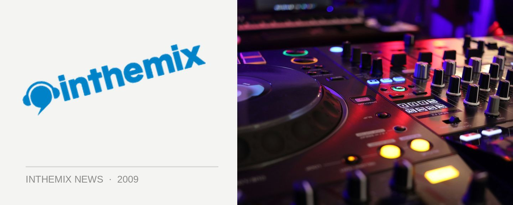

Sole Food back for more with Big Bud at helm
Foreigndub’s delicious new concoction Sole Food will be back at the end of June for round two, taking over the Civic Underground and again set to bring a healthy serving of drum n’ bass, dished up with a soulful fusion of jazz, funk and reggae. And this time around, UK drum n’ bass personality Big Bud will be coming along for the ride. DJ, producer and label boss, he’s been making music since the mid 90s and in that time he’s released over 100 tracks with five artist albums to his name.
Big Bud ahs released tunes on seminal drum n’ bass imprints like Creative Source, Nuphonic and*LTJ Bukem’s* label Good Looking Records, but he’s since fired up his own Soundtrax Records. With his sound he brings drum n’ bass with a heavy dose of soul, funk, jazz and reggae, making him a perfect choice of performer to host a Sole Food event!
Sole Food hits the Civic Underground on Saturday 27th June, presented by inthemix. Tickets on sale now, stay tuned for our feature interview next week.